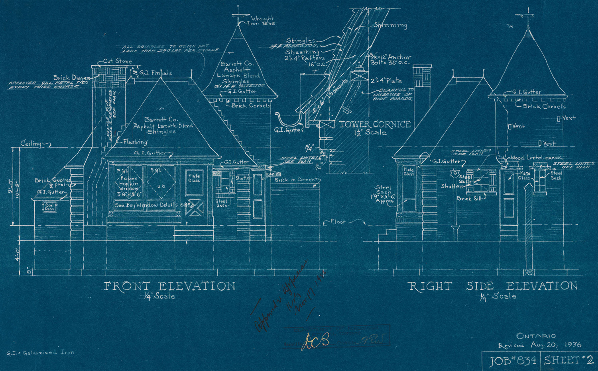
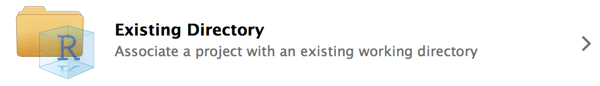

| Opinionated Analysis Development | |||
| Opinionated Approach | Question Addressed | Tool1 | Section1 |
|---|---|---|---|
| Executable analysis scripts | Can you re-run the analysis and get the same results? | Code first | Project Organization |
| Source: Parker, Hilary. n.d. “Opinionated Analysis Development.” https://doi.org/10.7287/peerj.preprints.3210v1. | |||
| 1 Added by Aaron R. Williams | |||
3 Project Organization
Abstract
This section covers the basics of organizing and documenting a reproducible analysis.

To achieve reproducibility, we need to capture every step of an analysis from loading and cleaning the data to creating figures and visualizations. Recording and documenting every step ensures that others (and future you!) has a fighting chance and re-creating the analysis. We’ll start with three pillars of project organization:
- Code First
- Project-Oriented Workflow
- Documentation
1. Code First

Source: Qr189
{kind=link}
The Great British Bake Off (GBBO) is a popular show about a baking competition in Great Britain. Each week contestants compete in a three-round baking competition. The second round is always the technical challenge, where bakers try to finish a challenging bake with intentionally vague instructions. Data analysis should never feel like a technical round from the GBBO.
Our analyses should be captured from start to finish by a script or scripts. If we think of a script as a recipe, we want to capture every step from buying the ingredients for a bake all the way to how we put the bake on the table. Ideally, we want to capture every step with code.
This desire should influence our tool selection. Point-and-click tools like Excel, Tableau, and Power BI are widely used but fall short of this simple standard. Instead, we should use programming languages with robust functionality.
How we use these programming languages matters! R and Python are powerful because they support interactive data analysis that works well with the development and testing of hypotheses. The uncleaned results of interactive data analysis are rarely reproducible. Rather, we need to clean up our scripts so they run from start to finish without intervention (executable) and achieve all of the objectives of our final analysis.
Proprietary tools like SAS and Stata can be used for reproducible workflows! I have a personal preference for R, Python, and Julia because they are open source and promote accessibility because they don’t cost any money for users. R and Python used to be much tougher to use. Now they are supported by Integrated Development Environments (IDE) like RStudio, Positron, and VS Code.
Adopting a code-first approach to data analysis creates many benefits!
- Code maximizes the chance of catching mistakes when they inevitably happen.
- Code is the clearest way to document and share an analysis.
- Reproducible code creates a single source of truth. Any result can be mapped back to the code and data that created the result.
- Code allows for robust version control.
- Code can scale analyses to bigger data and bigger projects.
We’ll cover more programming concepts later. For now, let’s focus on three.
- Load external dependencies at the top of an analysis.
- When possible, gather your data using code. Many data sets can be accessed through application programming interface (API). For example, if you run a data collection using Qualtrics use the Qualtrics API instead of point-and-clicking to download the data from the website. With R, it’s possible to download data with
download.file(). I don’t recommend downloading the data every time you run your analysis. Instead, download the data only if the data aren’t present.
- Finally, capture outputs with code. It’s so tempting to jump into a tool like Excel but this undermines our objectives.
library(ggplot2)is powerful for data visualizations andlibrary(gt)is powerful for tables.
During development, it’s easy to run lines of code out of order or to skip capturing an important step like loading a package or dropping that pesky outlier. Restarting your computing environment early and often can promote good practices and ensure accountability. This is easy in RStudio using Session > Restart R.
2. Project-Oriented Workflow
We will use a project-oriented workflow.
3.0.1 R Projects
R Projects, proper noun, are the best way to organize an analysis. They have several advantages:
- They make it possible to concurrently run multiple RStudio sessions.
- They allow for project-specific RStudio settings.
- They integrate well with Git version control.
- They are the “node” of relative file paths. (more on this in a second) This makes code highly portable.
Every new analysis in R should start with an R Project. First, create a directory that holds all data, scripts, and files for the analysis. You can do this right in RStudio by clicking the “New Folder” button at the top of the “Files” tab located in the top or bottom right of RStudio. Storing files and data in a sub-directories is encouraged. For example, data can be stored in a folder called data/.
Next, click “New Project…” in the top right corner.

When prompted, turn your recently created “Existing Directory” into a project.

Upon completion, the name of the R Project should now be displayed in the top right corner of RStudio where it previously displayed “Project: (None)”. Once opened, .RProj files do not need to be saved. Double-clicking .Rproj files in the directory is now the best way to open RStudio. This will allow for the concurrent use of multiple R sessions and ensure the portability of file paths. Once an RStudio project is open, scripts can be opened by double-clicking individual files in the computer directory or clicking files in the “Files” tab.
3.0.2 Filepaths
Windows file paths are usually delimited with \. *nix file paths are usually delimited with /. Never use \ in file paths in R. \ is an escape character in R and will complicate an analysis. Fortunately, RStudio understands / in file paths regardless of operating system.
Never use setwd() in R. It is unnecessary, it makes code unreproducible across machines, and it is rude to collaborators. R Projects create a better framework for file paths. Simply treat the directory where the R Project lives as the working directory and directories inside of that directory as sub-directories.
For example, say there’s a .Rproj called starwars-analysis.Rproj in a directory called starwars-analysis/. If there is a .csv in that folder called jedi.csv, the file can be loaded with read_csv("jedi.csv") instead of read_csv("H:/alena/analyses/starwars-analysis/jedi.csv"). If that file is in a sub-directory of starwars-analysis called data, it can be loaded with read_csv("data/jedi.csv"). The same concepts hold for writing data and graphics.
This simplifies code and makes it portable because all relative file paths will be identical on all computers. To share an analysis, simply send the entire directory to a collaborator or share it with GitHub.
Here’s an example directory:

3. Documentation
Humans are frequently the most expensive part of any data analysis. Documentation is essential to helping humans quickly and clearly understand the structure and steps of an analysis.
Next, we’ll discuss commenting and READMEs.
3.0.4 README
README’s are useful for providing big-picture context and instructions for a project. We will always include READMEs as a README.md file in the top level of our project directory. File ending in .md are Markdown files.
READMEs should contain big-picture documentation for a project. Sections can include:
- Brief project description
- Instructions for contributions
- Codes of conduct
- Instructions for reproduction
- Licenses
- Examples
Here are a few examples:
- Boosting Upward Mobility from Poverty
- Code and results for ‘The Association between Income and Life Expectancy in the United States, 2001-2014’
- Style Guide for ‘The Association between Income and Life Expectancy in the United States, 2001-2014’
Tip
We should now have a project directory with a .Rproj and a README.
3.0.3 Comments
Comments are important for adding in-the-weeds context for code. R will interpret all text in a
.Rscript as R code unless the code follows#, the comment symbol. Comments are essential to writing clear code in any programming language.It should be obvious what a line of clear R code accomplishes. It isn’t always obvious why a clear line of R code is included in a script. Comments should focus on the why of R code and not the what of R code.
The following comment isn’t useful because it just restates the R code, which is clear:
The following comment is useful because it adds context to the R code:
The following is useful because it avoids magic numbers.